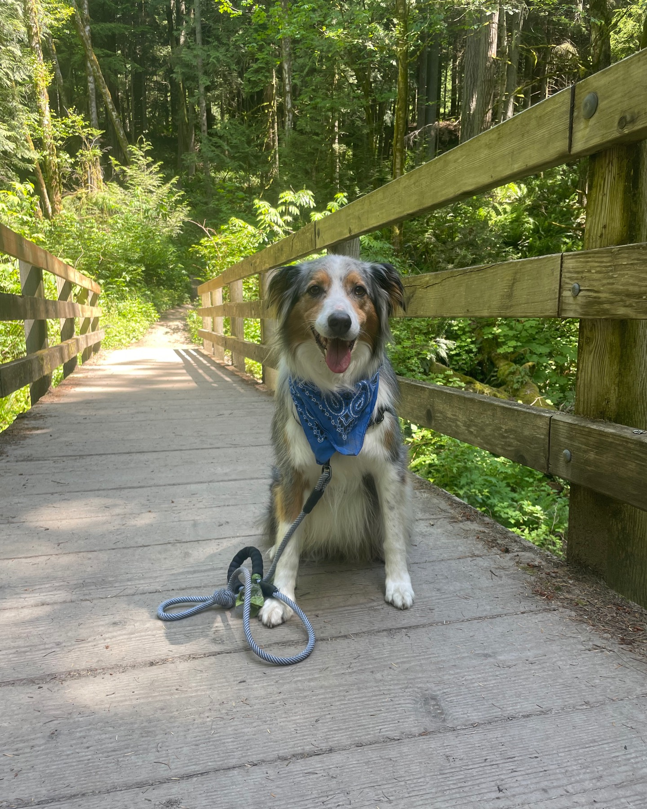

Western Washington
Eastern Washington
Mt. Rainier
Photo Gallery
Newsletter
Photo Gallery
Tolmie Peak Trail

Poo Poo Point
Tolmie Peak Trail
Rattlesnake Ledge
Lake Sammamish Trail
Cape Flattery
Cape Flattery
Colchuck Lake